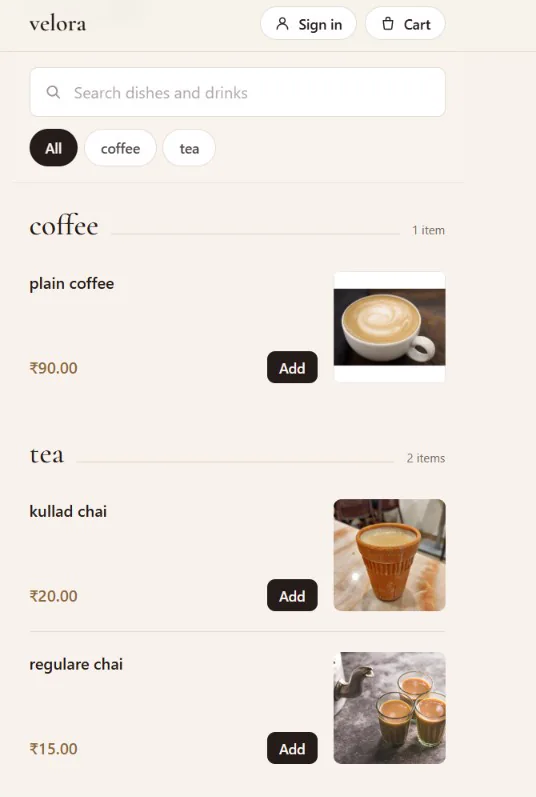
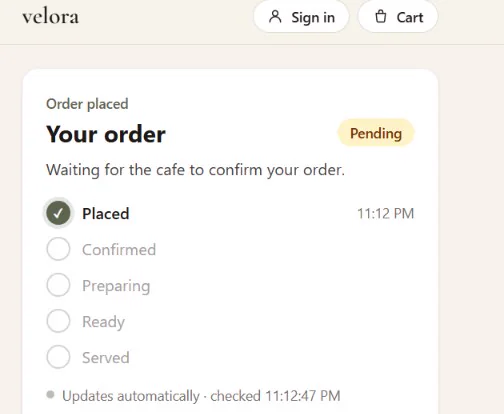

Open to internship opportunities
Nikhil Modi
Python Developer & Full‑Stack Application Builder
B.Sc. IT student focused on Python automation, Django REST APIs, backend development, and full‑stack applications.


- Placed
- Confirmed
- Preparing
- Ready
- Served